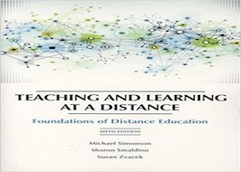

Distance Education Technology
Course Description
Explores the use of computer software to enhance effectiveness and efficiency in developing teaching and training via distance education.
Learners explore the use of the various software used in school and non-school teaching or training settings, conduct critical evaluation
of software currently used in industry (both educational and corporate), and integrate these software products into the teaching/training
and development environment. Current research in the area of instructional computing and its practical implications for teaching and training
and development are also discussed."
Reference:ACE: Adult and Community Education - Course Descriptions - Graduate Catalog - Graduate Studies and Research - IUP. (2018). Iup.edu. Retrieved 12 February 2018, from https://www.iup.edu/graduatestudies/catalog/course-descriptions/ace--adult-and-community-education/
-
Required Texts:
